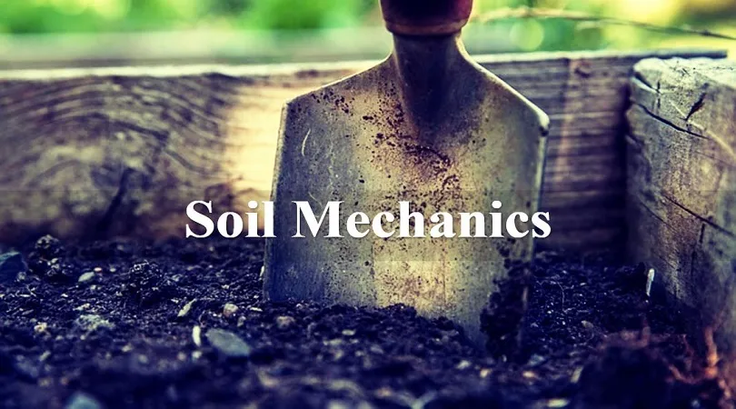
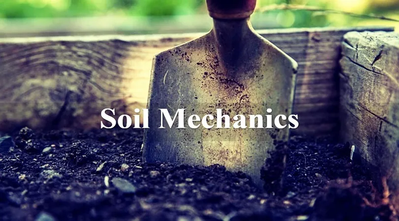
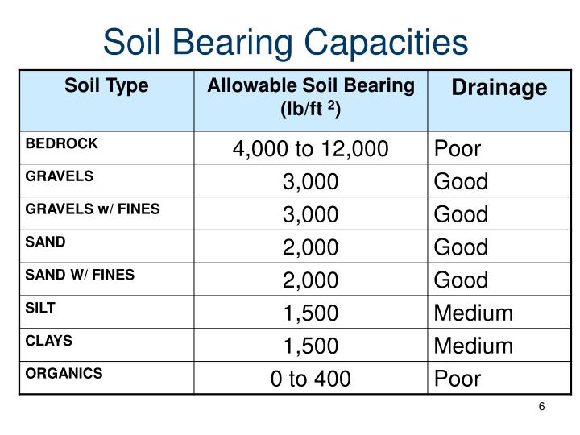

ENG0018 Computer Laboratory 2023/24
Student URN: 6811459
Conference paper: Soil Mechanics
ABSTRACT
In this paper, I will embark on a journey into the depths of Soil Mechanics, aiming to show its fundamental concepts, principles, and applications.
By delving into the intricate world of soil behavior, I hope to contribute to the broader understanding of this critical field, offering insights that
can guide engineering practices, environmental preservation efforts, and scientific exploration.
INTRODUCTION
Soil, as the fundamental foundation of our terrestrial environment, plays a pivotal role in shaping our landscapes, supporting infrastructure, and sustaining life itself.
Understanding the intricate behavior of soil under various conditions is at the core of the science of Soil Mechanics. This discipline delves into the mechanics and
physical properties of soils, unveiling the complex interactions between soil particles, moisture content, and external forces.
The significance of Soil Mechanics extends far beyond its academic realm. Engineers rely on its principles to design stable foundations for buildings, bridges, and dams,
while geologists use it to decipher the Earth's history through the study of soil layers. Moreover, environmental scientists employ Soil Mechanics to assess the impact
of soil erosion and contamination on our ecosystems.
Importance of Soil Mechanics
1. Soil mechanics ensures safe and stable foundation design for structures.
2. It analyzes slope stability and prevents landslides and slope failures.
3. Soil mechanics guides the design of retaining structures.
4. It facilitates the selection and implementation of soil improvement techniques.
5. It assesses and mitigates geotechnical hazards.
ANALYSIS AND DISCUSSION

The importance of this mechanical analysis of the different capacities of soil tells us numerous things that an Engineer will take into account when designing the placement
of a structure.
REFERENCES
1. Mitchell, J.K., and Soga, K. (2005) Fundamentals of soil behavior, Third edition, John Wiley and Sons, Inc., ISBN 978-0-471-46302-3
2. Santamarina, J.C., Klein, K.A., & Fam, M.A. (2001). Soils and Waves: Particulate Materials Behavior, Characterization and Process Monitoring. Wiley. ISBN 978-0-471-49058-6
3. Powrie, W., Spon Press, 2004, Soil Mechanics – 2nd ed ISBN 0-415-31156-X
4. A Guide to Soil Mechanics, Bolton, Malcolm, Macmillan Press, 1979. ISBN 0-333-18931-0